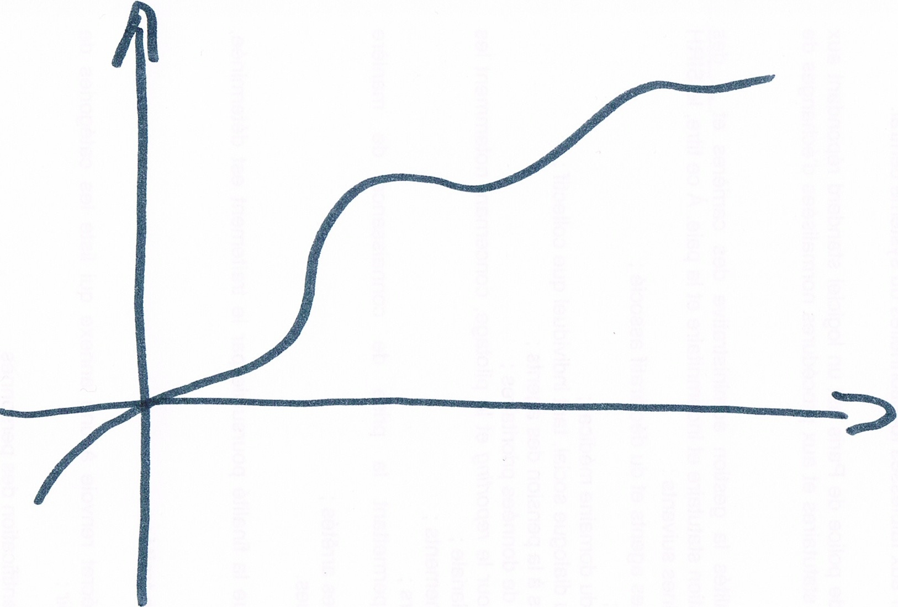
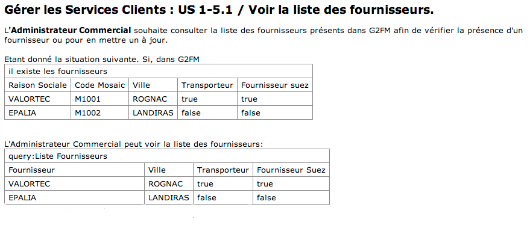

REX: FitNesse
Comment on a utilisé FitNesse et
comment ça a remplacé nos tests unitaires
Maëlle Dogué et Etienne Charignon
Introduction
Nous vous présenterons rapidement
Nous vous montrerons du vrai,
nos documents d'acceptation et la mécanique qui est derrière.
- les concepts du développement piloté par les tests fonctionnels (ATTD : acceptance tests driven development)
- l'outil FitNesse, que nous avons mis en place.
Nous vous montrerons du vrai,
nos documents d'acceptation et la mécanique qui est derrière.
Objectifs
Quels sont vos objectifs pour cette soirée ?
La Théorie
ATDD : Acceptance Test Driven Developpement
TDR : Test Driven Requirement
- Dévelopement piloté par les tests d'acceptation
TDR : Test Driven Requirement
- Dévelopement piloté par les exigences
La Théorie
Spécifications ?... La Théorie
par l'exemple ! Vous y croyez ?La Théorie
Le rôle de l'analyste
Equipe cross-fonctionnelle
Une place et un outil dans une équipe agile.
La Théorie
Les tests fonctionnels ?
Ce sont les tests de toute l'équipe
Il n'y a pas d'une part les tests développeur et d'autre part les tests client
Ma Théorie
FitNesse c'est beaucoup mieux que jUnit
Combien de tests jUnit sont en fait des tests fontionnels ? Beaucoup le sont et ce sont les meilleurs
FitNesse permet de séparer les données de tests du moteur d'exécution des tests
jUnit est propice à la sur-conception
jUnit rigidifie l'architecture (mais par ailleurs favorise le découplage, il est vrai)
FitNesse en bref
Outil de développement d'application collaboratif
Outil de test d'application
Un Wiki
Un serveur web
FitNesse : des tableaux
Dans FitNesse tout est dans des tableaux.
Par opposition, un certain nombre de framworks plutôt dits "BDD" se sont construits par dessus Gherkin et utilisent un DSL
Dans un document de présentation de BDD d'un de nos cours du soir récent (très bon document)Behaviour Driven Development, slide 52
FitNesse : 3 types de tableaux
- Tables de décision (decision tables)
- Requêtes (Queries)
- Scriptes (Scripts)
FitNesse : des fixtures
FitNesse : des fixtures
FitNesse : des fixtures
Notre personalisation
Problème : communiquer entre les tableaux.Des variables au PageContext
Sur FitNesse.org ?on vous conseille d'utiliser des variables statiques.
Comment écrire le code des fixtures :
"What That Call To StaticGame Is For"
Nous avons introduit le PageContext :
une map réinitialisée à chaque page
La Généralisation des IlExiste, ListeDe, Selection
Le Gain de l'analyste testeur
Communication Réutilisation Normalisation du langage Qualité depuis le début Vérification des cas métier simpleLe Gain du Développeur
Exigences claires Tests automatisés Prise en main du code Transfert du code Couverture fonctionnel des testsLe Gain du PO/Scrum Master
Les specs sont lues Aucune partie de la spec oubliée Bonne compréhension des specs Gain de temps sur les tests d'acceptanceLa démo
Le projet "Sita".Sita est une entreprise de gestions des déchets. Nous avons développé une application de gestion de l'activité, dans le but de faciliter la facturation. Notre application web, remplace un processus basé sur l'utilisation d'Excel
La démo

Les types de tests
La mécanique
- maven : pb de dépendances : Maintenir le pom.xml de fitnesse
- L'arborescence de liens "non regression", La page "Qualité Non-Régression"
- Exemple de Fixture Avancée : SecuriteService
- DownloadPDF
- Temps d'exécution : un peu plus de 2 minutes
Conclusion
CouvertureConfort de développement